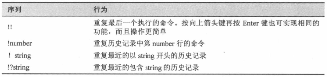

1. 其他命令
1.1. exit
- 关闭当前会话
exit
1.2. echo
display a line of text
- 显示一行文本。把文本参数内容打印到标准输出
echo -n '123456' # -n 选项用于抑制末尾输出新行字符
1.3. clear
clear the terminal screen
- 清屏
1.4. history
GNU History Library
- 显示历史列表的记录
history | less
history | grep text
1.4.1. 历史记录扩展
使用
!进行历史记录扩展- shell 提供的一种专门用于扩展历史记录项的字符
- 通过按 Tab 将命令展开
示例

1.5. xargs
build and execute command lines from standard input
- 从标准输入中建立、执行命令行
xargs ls # 用户输入文件夹名，ls 列出其中的内容
ls *.txt | xargs cat # 输出所有 txt 文件的内容
1.6. export
- export 命令告诉 shell，将本 shell 中的某个变量导出使子进程也可用
1.7. . 或 source
- "." 命令和 source 命令相同, 都是 shell 内置命令, 用来读取一个指定的 shell 命令文件, 并将其看做是像从键盘中输入的一样。